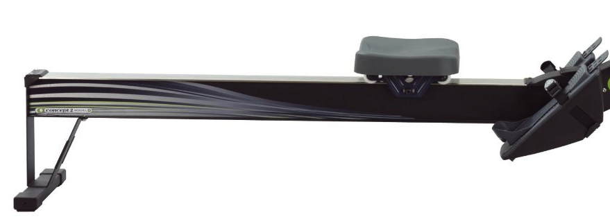

Texas Crew Erg Rodeo
Ready All!
Frequently Asked Questions
Where can I sign up and how much is it?
The registration can be found here:
Registration
Singles:$20.00
Who can register?
Anyone can sign up! For a more in depth look at the categories please refer here:
Heats
When and where is the event held?
The event will be taking place on Feburary 14,2015.
Erg Rodeo is held in the Gregory Gymnasium Arena on campus.
2101 Speedway, Austin, TX 78712.
How long is the course?
The course is roughly a 2k. A detailed aerial view of the course can be found below:

How do I earn a swag belt buckle?
The fastest time in the following heats will win a belt buckle:
Have any questions?
Feel free to contact our president at jmharmon125@utexas.edu or view the Regatta Central Page and check out our Facebook Page.